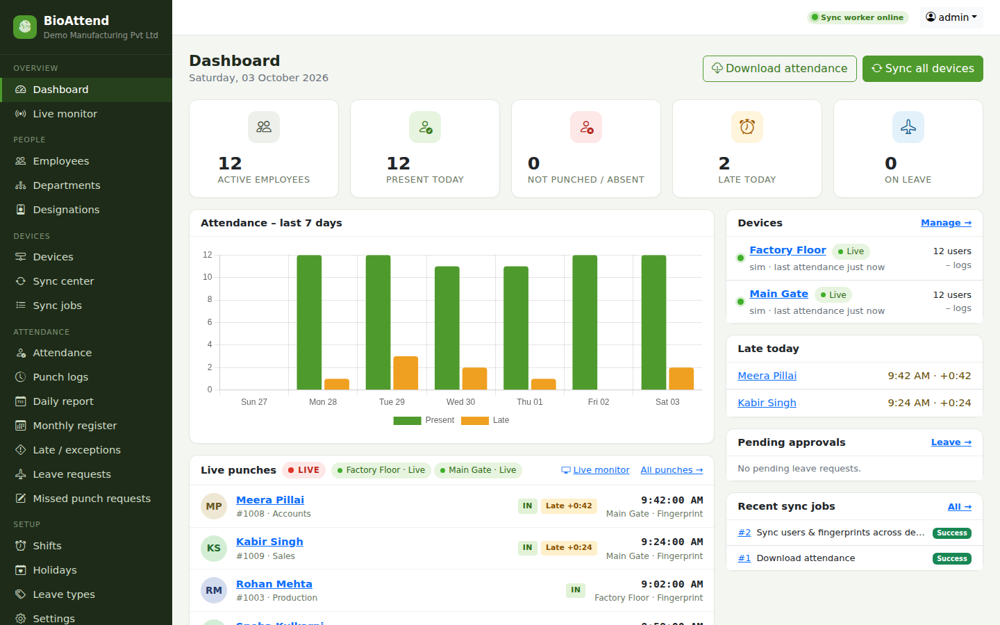
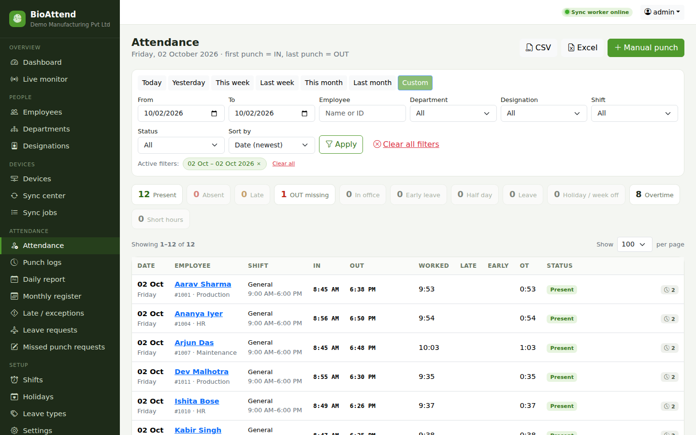
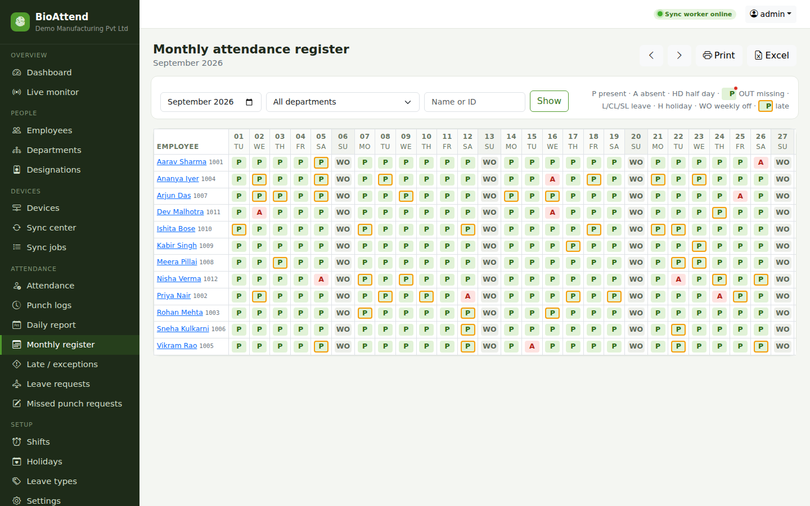
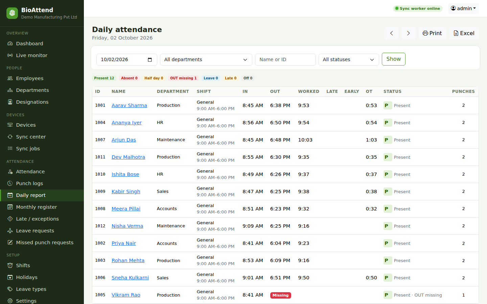
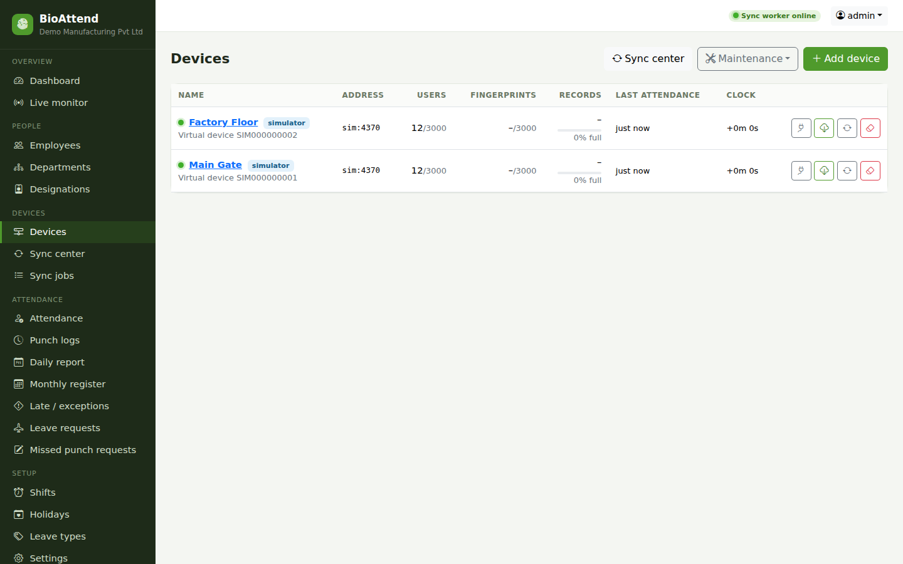

Biometric attendance system for ZKTeco devices
BioAttend is attendance management software for ZKTeco fingerprint and RFID terminals. It keeps employees and fingerprints in sync across all your devices, collects every punch, and turns them into daily and monthly attendance reports. Run it on one office PC (Windows, Linux or Mac), or on a server with Docker.
Download BioAttend 1.0.5 Source code on GitHub
What is BioAttend?
BioAttend is a biometric attendance management system that connects directly to ZKTeco attendance devices over the local network (TCP port 4370). It downloads attendance records, shows punches live as people use the device, and sends new or changed employees to every device. A fingerprint enrolled on one device is copied to all others on the next sync, so staff can punch at any entrance. Attendance is calculated from shifts: the first punch of the day counts as IN, the last as OUT, and late arrivals, early leaving, overtime and missing OUT punches are flagged. Reports export to Excel and CSV. Everything runs on your own computer or server; no cloud account is needed, and attendance data stays in your office.
Features
Multi-device sync
Users, fingerprints, RFID cards and passwords are kept the same on every ZKTeco device. New fingerprints from an enroll machine are copied to all others. A dry-run preview shows every change before it is made.
Live punches
Punches appear on the dashboard and the live monitor as people use the device. Attendance is also downloaded every 5 minutes, without duplicates.
Attendance reports
Daily report, monthly register (P / A / half day / leave / holiday / weekly off), late, early-leave and overtime reports, and per-employee attendance cards, all with Excel export.
Shifts and leave
Shifts with grace times and night shifts, automatic shift detection from the punch time, holidays, leave types with yearly quotas, and approval of leave and missed-punch requests.
Backups
Scheduled, encrypted database backups to the local disk, Amazon S3 or compatible storage, FTP/SFTP, WebDAV, or Google Drive and OneDrive through rclone, with restore from the web page.
Safe for your devices
Nothing is deleted from a device automatically. Clearing a full attendance memory is a manual step, and only after every record has been saved and checked. Devices can also be set to read-only.
Which ZKTeco devices work with BioAttend?
BioAttend works with ZKTeco standalone attendance terminals that use the ZKTeco TCP/IP protocol on port 4370, the protocol that ZKTime.Net and similar software use. It has been tested with the ZKTeco x 2008 (ZLM30_TFT platform, firmware 6.70) and the ZKTeco K45 Pro/ID. Fingerprints, RFID cards and device passwords are synced. Face templates cannot be transferred, so face-only devices collect attendance but faces must be enrolled on each device. For copied fingerprints to work, all devices must use the same fingerprint algorithm version, which BioAttend shows on each device page.
How does multi-device sync work?
Each person is identified by their user ID (PIN), which is the same on every device. A new employee registered in BioAttend is sent to all devices at once. The fingerprint is enrolled on any one device, and the next sync copies it to the others. Existing users are only rewritten when their name, card or password actually changed, and a user ID that belongs to a different person on a device is reported as a conflict and left untouched.
Screenshots




Screenshots use made-up demo data (manage.py demo_data).
Download BioAttend
Every download contains the complete system (web portal, device connection, database and backups). No Python or separate database is needed.
| Your computer | Download | Guide |
|---|---|---|
| Windows 10 / 11 | Setup (.exe), MSI for IT deployment, or portable .zip | Windows guide |
| Ubuntu, Debian, Mint | .deb package or AppImage | Linux guide |
| Fedora, RHEL, Rocky, Alma | .rpm package or AppImage | Linux guide |
| Mac (Apple Silicon or Intel) | .dmg for macOS 12 or newer | Mac guide |
| Server (many users) | Docker Compose with PostgreSQL, or a Linux server with systemd | Deployment guide |
Frequently asked questions
Do I need a server to use BioAttend?
No. The Windows, Linux and Mac apps contain the whole system and run on one office PC. It keeps collecting punches in the background and starts with the computer. A server setup (Docker or systemd) is available when many people need to use BioAttend at the same time.
Does BioAttend need an internet connection?
No. BioAttend talks to the devices on the local network. Internet is only needed if you choose to send backups to cloud storage.
Can BioAttend replace ZKTime.Net?
For most offices, yes. It covers device management, user and fingerprint sync across devices, attendance download, shifts, leave and reports. Run only one program against a device at a time, so that the two programs do not change the same users.
How much does BioAttend cost?
BioAttend is free to download. The source code is on GitHub.
Where is the attendance data stored?
In a database on your own computer or server: SQLite in the desktop apps, PostgreSQL on a server. Backups are encrypted with a passphrase you choose.